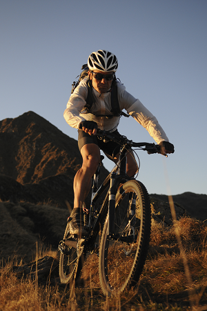
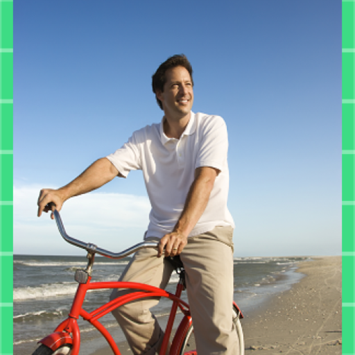

Our mission at Black Mountain Bikes is to help you reach your athletic goals through
motivation, support, and education. We have years of experience with athletes
of all ages and abilities and we're happy to assist any athlete
committed to pursuing his or her dreams.
We helped pioneer mountain bikes into San Diego as we sold Gary Fisher Mt Tam #33 and first generation
Stumpjumpers back in 1982. We offer Birmingham's largest mountain bike selection, proudly representing Specialized, and Scott. The finest road and gravel bikes from Specialized, Cervelo, Scott, and Moots adorn our showroom.
Come in and introduce yourself to our team of knowledgeable bike coaches and educators.

Mountain bikes are designed to be ridden primarily on pavement for recreation, fitness, and speed. These are the bikes you see everywhere from the Tour de France to the group road ride at your local bike shop. Road bike technology has developed at a rapid pace, and new bikes are lighter, stronger, more comfortable, and faster than ever before.
Beach and Mountain Bikes,
You can build a private training studio for local athletes.
All road bikes will perform effectively in a wide variety of riding situations, from racing to long distance touring. But each style is designed to emphasize certain rider priorities and be used for a particular type of ride. Determining which style of bike fits your goals is the first step in identifying the one that you’ll most enjoy riding.

If you want a unique bike that stands out from the average mountain bike, a classic beach cruiser
is the way to go. With a curvy frame, wide balloon tires, and an arsenal of accessories, a beach cruiser
is fun on two wheels.
To find the right men’s beach cruiser, you first need to look at size. Available with small, medium, and
large frames, the appropriate bike size will maximize your comfort as you pedal down the boardwalk. Beyond size, there are several different styles to consider, such as the classic cruiser and the chopper. Keep an eye out for smaller accessories such as fenders, lights, bells, racks, and baskets that might enhance your ride, too..